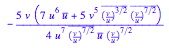
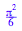

E^r * E^-r

diff(u/v, v)
diff(1/x, x)

int(1/x, x)
(u*v*w) - (1/(u*v*w))
(u*v)/8 + (u*v)/(2*w) + (u*w)/(2*v) + (u*v*w) - (1/(u*v*w)) + (w*v)/(2*u)
simplify(%)
diff(u/v, u)
diff(u/v, v)

diff(u/v, w)

E^1
diff(sin(p)^2, p)
int(sin(p)^2, p)
(PI/2)/2

int(cos(t)^2, t)
sin(4*PI)

u / (v/u)^-0.4
simplify(%)

(u/y) * y^1.4
(y^0.4)^-0.4
solve(v = u * (y^0.4), y)
simplify(0.4)

expand(0.4)

5/2
float(%)
float(2/5)

(y^(2/5))^(5/2)
u / (v/u)^(5/2)
simplify(%)

diff(%, u)

u / (v/u)^(5/2)

diff(%, v)
diff((v/u)^(5/2), v)
diff((v/u)^(5/2), u)
linalg::jacobian([u / (v/u)^(5/2), (v/u)^(5/2)], [u, v])
linalg::scalarProduct(linalg::col(%,1), linalg::col(%,2))

simplify(%)

int(%, v=c..d)
int(%, u=a..b)
u - (-2 * v + 6*u)/5
linalg::jacobian([%, (v- 3*u)/5],[u,v])
linalg::scalarProduct(linalg::col(%,1), linalg::col(%,2))
int(u/v, v)
int(u/v, v=1..8)
ln(8) - ln(1)

simplify(ln(8))
int(u * ln(8), u)
int(u * ln(8), u=0..4)
8*3

3 * int(2*u + v - 3*(u + 2*v), v=0..(1-u))
int(%, u=0..1)
int(2*u + v - 3*(u + 2*v), v)

simplify(%)

simplify(2*u + v - 3*(u + 2*v))
int(u +5*v, v)
int(%, u)
int(cos(v/u), v)
sin(-1)

int(1/(1-x*y), x)
int(1/(1-x*y), x=0..1)
simplify(%)
(-ln(y-1) + ln(-1))/y
int(%, y)
int((-ln(y-1) + ln(-1))/y, y=0..1)
